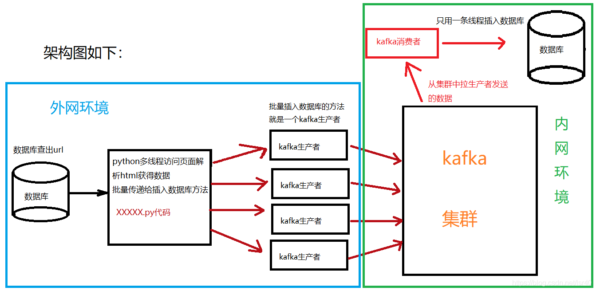

使用python連線kafka介紹
整體架構調整如下圖：

歡看文字描述的朋友可以看看如下解釋：
在叢集外的一臺機器上啟動一個python指令碼，該指令碼從資料庫讀出資料，然後將這些資料分發給多個執行緒，每個執行緒各自訪問url，解析正文，建立一個kafka的生產者往kafka中傳送資料（有多少條執行緒，就有多少個kafka資訊），接著在內網環境中，啟動一個kafka消費者，將所有生產者傳遞過來的資料解析，並批量插入資料庫。
然後我再說幾個點：
1、我試過，如果每個kafka生產者獲取到個url的正文，就往kafka傳送訊息，這樣相對來說可以更加保證資料不丟失，但是消費者會消費來不及，也就是說會有資料延遲，而且把生產者關了一段時間，消費者還消費不完（延遲挺嚴重），所以還是得通過拼接字串的方式，使得一條kafka訊息中，有幾十（甚至可以更多）條資料，然後消費端再解析這個資料，批量插入資料庫（詳細看程式碼），節省時間和資源。
2、資料是否會出現問題，會的，我來列舉下會丟或者重複資料的幾個地方。
-
丟失資料：
- urllib獲取頁面資訊的時候，有可能超時，所以那個頁面就跳過去了
- 生產者傳送資料的時候，有可能因為網路或者其他原因沒傳送成功（大部分是因為網路）
-
資料重複：
- 消費者消費完資料之後，由於消費者的程式掛了，沒能將偏移量提交到zookeeper上，導致下次再開啟消費者的時候，重複消費資料，但是因為我的消費者壓力不大，所以沒有出現主動掛掉的情況
總結：我會通過sql的join方式，每次都從資料庫中拿出那些未被處理的資料，也就是說丟資料也無所謂，資料重複的問題，可以用主鍵（一張表內不會出現兩條相同主鍵的資料），或者最後用sql來對錶進行去重的方式來解決。
3、python連線kafka有兩個包：pykafka和kafka-python
具體他們之間孰好孰壞，可以看下pykafka開發者在自己的GitHub給別人的回答：https://github.com/Parsely/pykafka/issues/334，當然是全英文的。不過（作者：高爾夫golf，標明轉載）https://blog.csdn.net/konglongaa/article/details/81206889有對於這個issue的中文翻譯和總結，如果大家有興趣可以去看下，當然，這個issue的回答有些年代了，所以也不一定完全正確，比如裡面說pykafka只支援0.8.2版本的kafka，但是我使用了kafka_2.11-1.0.1版本，完全沒有版本不相容的問題。
程式碼如下：
生產者：
from concurrent.futures import ThreadPoolExecutor
import time
import urllib.request
import psycopg2
from lxml import etree
from pykafka import KafkaClient
def insertManyRow(strings):
print('insertManyRow:',strings)
# 多條資料間使用 =.= 來做分隔符
b="=.=".join(strings)
try:
print('進入到生產者程式碼！')
client = KafkaClient(hosts="broker1:埠1,broker2:埠2,broker3:埠3")
# 檢視所有topic
print(client.topics)
topic = client.topics['指定傳送的topic名稱'] # 選擇一個topic
# 同步傳送資料
with topic.get_sync_producer() as producer:
# 資料轉換成byte才可以傳送
producer.produce(bytes(b, encoding="utf8"))
except Exception as e:
print("傳送失敗%s" % (e))
def productList(rows):
string=''
# 將多條資料放入list中
strings=[]
count = 0
for row in rows:
file = urllib.request.urlopen(row[2],timeout=5)
try:
data = file.read()
#是否被封號，從偏移量3000的位置往下找
isBan=str(data).find('被封號的字串', 3000)
if(isBan!=-1):
string='ip被封'
else:
selector = etree.HTML(data)
data = selector.xpath('//*[@id="zhengwen"]/p/span/text()')
# 將獲取到的多個正文內容拼接成一條字串
for i in data:
if (i != None):
string = string + i
# 列印檢視
print('正文：', string)
# 將資料庫中一條資料的多個欄位通過 -.- 拼接到一起
content=row[0]+'-.-'+row[1]+'-.-'+string+'-.-'+row[3]+'-.-'+row[4]
# 放入list中
strings.append(content)
# 清空字串
string = ''
print("集合：", strings)
print("集合長度：",len(strings))
count = count + 1
# 每十條資料就呼叫一次kafka生產者的程式碼
if (count >= 10):
print('進入到insertManyRow')
insertManyRow(strings)
strings = []
count = 0
except Exception as e:
print("執行緒出錯：%s" % (e))
if __name__ == '__main__':
conn = psycopg2.connect(database="資料庫", user="使用者名稱", password="密碼",
host="ip",
port="埠")
cur = conn.cursor()
sql = "查詢的sql，查出未處理的url"
cur.execute(sql1)
rows = cur.fetchall()
print('拉取到資料')
start=time.time()
# 開啟10個執行緒，每個執行緒每次拉取10條url
with ThreadPoolExecutor(10) as executor:
for i in range(0, len(rows)//10, 1):
executor.submit(productList, rows[i*10:(i+1)*10])
end = time.time()
print("time: " + str(end - start))
conn.close()
消費者：
from pykafka import KafkaClient
import psycopg2
client = KafkaClient(hosts="broker1:埠1,broker2:埠2,broker3:埠3")
# 檢視所有topic
print(client.topics)
topic = client.topics['指定傳送的topic名稱'] # 選擇一個topic
#獲得一個均衡的消費者
balanced_consumer = topic.get_balanced_consumer(
consumer_group=bytes('消費者組名',encoding='utf-8'),
auto_commit_enable=True,# 設定為False的時候不需要新增consumer_group,直接連線topic即可取到訊息
#kafka在zk上的路徑，這個路徑應該和kafka的broker配置的zk路徑一樣（不然zk上會放得亂七八糟的。。。）
zookeeper_connect='zk1:埠1,zk2:埠1,zk3:埠3/kafka在zk上的路徑'
)
# arrs=[]
insertarr=[]
for message in balanced_consumer:
print(message)
if message is not None:
#print(message.offset, message.value, type(message.value), str(message.value, encoding="utf8"))
#將接受到的資料轉換成executemany能接受的資料格式
arrs=str(message.value, encoding="utf8").split('=.=')
for arr in arrs:
a=arr.split('-.-')
insertarr.append(a)
try:
conn = psycopg2.connect(database="資料庫", user="使用者名稱", password="密碼",
host="ip",
port="埠")
cur = conn.cursor()
sql = "INSERT INTO 資料庫.表名(欄位1,欄位2,欄位3,欄位4,欄位5) VALUES(%s,%s,%s,%s,%s)"
print(insertarr)
cur.executemany(sql, insertarr)
conn.commit()
insertarr = []
conn.close()
except Exception as e:
print("插入錯誤：%s" % (e))
insertarr=[]
conn.close()
所以，到這裡，這個爬蟲系列的文章就更新到這裡了！因為我使用到了kafka框架，下一篇文章，應該會說下kafka生產者，消費者的一些東西，比如，我使用的get_balanced_consumer這個api，然後還有第一篇文章說的分類的東西，我也會開部落格來記錄！